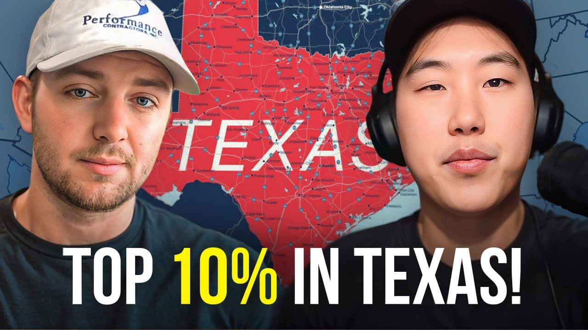

How Christopher Built a Top 10% Airbnb in Texas After 5 Years of Study (2026 Case Study)
Christopher went from 5 years of analysis paralysis to $1,700/month cash flow with his first Texas Airbnb property. Learn his exact strategies for landlord negotiation, property setup, and achieving top 10% status in his market.


Use This Like a Tool
The point of this page is not more information. The point is better judgment before you act.
- Pull the real numbers first.
- Run a base case and a stress case.
- Use the result to make a cleaner decision, not a faster emotional one.
Christopher Bamford projects $1,700+ per month in cash flow from his first Airbnb property in Texas—and expects to exceed that estimate. After spending 5 years researching real estate without taking action, Christopher and his fiance finally committed to the Legacy Investing Show program and secured their first property within months. His property features a swimming pool (only 6% of listings have pools), a boho-themed interior, outdoor games including giant Jenga, and partnerships with local restaurants for guest gift cards.
This case study breaks down exactly how Christopher overcame analysis paralysis, made 50-70 landlord calls, negotiated a 3-year lease, and positioned his property in the top 10% of his Texas market—all while working in the oil and gas industry and raising a 3-year-old daughter.
In this article:
Quick Results: Christopher's Airbnb Arbitrage Numbers
| Metric | Value | Context |
|---|---|---|
| Monthly Cash Flow | $1,700+ (conservative) | Expects to exceed due to amenities |
| Properties | 1 (scaling planned) | Texas market |
| Lease Term | 3 years | Negotiated up from 1 year |
| Landlord Calls Made | 50-70 | Before securing deal |
| Pool Differentiation | Top 6% | Only 6% of properties have pools |
| Time Researching | 5 years | Before taking action |
| Time to First Deal | Months | After joining program |
| Landlord's Portfolio | 26 properties | Plus owns an Airbnb |
Christopher's Background: From Analysis Paralysis to Action
You don't need years of preparation to start Airbnb arbitrage—but Christopher's story shows what happens when you finally commit after extensive research. At 29 years old, living in Louisiana with his fiance and 3-year-old daughter, Christopher spent half a decade studying real estate before finally taking the leap.
The Entrepreneur Foundation
Christopher's entrepreneurial journey started with just $70 at garage sales. He turned that small investment into an eBay reselling business, learning the fundamentals of buying low and selling high. This early experience taught him that business success comes from taking calculated risks and learning through action—a lesson that would prove valuable years later.
After establishing his eBay business, Christopher entered the oil and gas industry for stable income. While the steady paycheck was nice, it put his entrepreneurial ambitions on the back burner. He never lost the drive to build something of his own, but finding the right vehicle for his capital and ambition proved challenging.
Five Years of Research
For five years, Christopher and his fiance researched real estate investing. They consumed content, studied different strategies, and analyzed markets—but never pulled the trigger. The barriers seemed too high: capital requirements, lack of guidance, uncertainty about the right approach.
"I could really never find my way in with real estate—with the capital that you have to have and everything, and just not knowing, and not necessarily having guidance on it."
The problem wasn't lack of knowledge—it was lack of a clear path forward. Christopher understood real estate concepts but didn't have a step-by-step system to follow. YouTube videos from multiple sources provided fragmented information that never quite fit together into an actionable plan.
The Decision to Commit
The turning point came when Christopher discovered Preston's YouTube channel. He and his fiance began watching videos together, and something clicked. Rather than piecing together information from dozens of sources, they found a comprehensive system they could follow.
A conversation with a coworker crystallized the decision. The coworker pointed out the contradiction: "You're going to buy a four-wheeler that's not going to make you any money, but you won't invest a little bit of money into your education that's going to make you money?"
That observation hit home. Christopher made the decision right there in the lunchroom at work, calling his fiance to confirm: they were buying the course.
"I was sitting in the lunchroom at my job and I said baby we're doing it, buying the course, buying the course."
The Airbnb Arbitrage Journey: Christopher's Timeline
Phase 1: Learning the System
Situation: Christopher committed to learning the Legacy Investing Show system thoroughly before taking action.
Unlike his previous approach of consuming random YouTube content, Christopher approached the course material systematically. He watched videos repeatedly, took detailed notes, and ensured he understood each concept before moving forward. Some sections required multiple viewings before the information fully clicked.
The market research module proved particularly challenging. Christopher questioned whether he truly understood the methodology, whether he would get it right. But he kept rewatching until the concepts became second nature.
"I had to watch videos over and over and over again just to make sure that it set in, to retain everything, write it down and go step by step."
Phase 2: The Landlord Outreach Grind
Situation: Christopher entered the challenging phase of calling landlords—and discovered that persistence beats perfection.
The first call was rough. Christopher went straight off the script, sounding robotic and unnatural. The landlord was polite, but the interaction clearly wasn't working. After the first 10 calls yielded no interest, Christopher knew he needed to change his approach.
He called his father for help. For 90 minutes, they practiced the pitch together—Christopher as the arbitrage operator, his dad playing the landlord. This repetition built the muscle memory needed to deliver the pitch naturally and confidently.
The breakthrough came when Christopher stopped leading with his ask. Instead of immediately explaining Airbnb arbitrage, he started building rapport: complimenting the property, asking about its history, getting landlords talking about their investment journey. Only then did he transition into his pitch.
"At first I was going straight into 'hey this is what I want to do.' I started to build rapport with these people—'hey the house looks incredible, the yard is great, beautiful home by the way.' Just kind of building a little bit of rapport."
Over the course of his outreach campaign, Christopher called 50-70 landlords. He experienced every possible response:
-
Immediate hang-ups
-
Polite but firm rejections
-
Interest that faded when landlords didn't understand the model
-
Promising conversations that fell apart when numbers didn't work
-
Landlords who wanted premiums that destroyed profitability
Phase 3: Finding the Right Landlord
Situation: Christopher found a landlord who saw himself in the young entrepreneur's journey.
Christopher set up saved searches in his target area, receiving notifications whenever new properties hit the market. When a promising listing appeared, he called and left a voicemail. The response came via text: "This is a realty company."
Most people would have written it off—dealing with property managers often means no direct landlord access. But Christopher pushed forward, asking for a phone conversation. The call revealed the "realty company" was actually a landlord with 26 properties plus his own Airbnb.
During the conversation, the landlord asked directly: "So how many of these do you have under your belt?"
Christopher chose honesty over embellishment. He explained that while this was his first property, he had invested heavily in education, completed thorough research, and had coaching and verification from mentors. He even offered the landlord Preston's name to verify the program's legitimacy.
The landlord's response surprised him: "A guy took a chance on me seven years ago and now I have 26 properties. If the numbers work and everything's legit on your end, I would love to get you into investing."
"Honesty to me is the best key. I want to be honest, I want to develop genuine relationships and possibly invest with this guy later on."
The landlord initially wanted only a 1-year lease—far too short for the numbers to work. Christopher negotiated for 4 years; they settled on 3 years with a renewal option. The landlord even offered to reduce certain costs to make the numbers work better.
Phase 4: Property Setup
Situation: Christopher and his fiance transformed a rental into a top-10% Airbnb experience.
With the lease signed, Christopher's fiance arrived at the property first, spending weeks preparing while he wrapped up work obligations. When Christopher joined, they spent days putting together every piece of furniture, hanging decorations, and deep cleaning every surface.
The setup checklist from the program proved invaluable, but Christopher's fiance added personal touches throughout. They chose a boho theme that felt distinctive without being polarizing.
The deep cleaning alone was a major undertaking—scrubbing doors, baseboards, inside cabinets, every bathroom surface. But Christopher knew that attention to detail separates top performers from average hosts.
"At the end of it you have it all together, you have all the decor and you just look around and it's an accomplishment. You feel good."
One innovative move: Christopher visited local restaurants with his laptop and welcome packet, pitching partnerships. He explained that he wanted to give guests a great experience, improve the local Tyler community, and drive business to local establishments. Multiple restaurants agreed to provide $5 gift cards for the welcome packet—including ice cream shops providing coupons his cleaning team would pick up.
Why Texas Works for Airbnb Arbitrage
Texas offers strong fundamentals for Airbnb arbitrage, with landlords more open to the model than many other states. Christopher chose his Texas market after careful analysis of demand drivers, competition levels, and landlord friendliness.
Christopher's Market Research Process
Christopher followed the program's market research methodology systematically:
The analysis revealed that only 6% of properties in his market have swimming pools. Similarly, only 6% have hot tubs. By securing a property with a pool and planning to add a hot tub, Christopher positioned his listing to appear when guests filter for these high-demand amenities.
Competition Analysis:
| Amenity | Properties With | Christopher's Property |
|---|---|---|
| Pool | 6% | Yes |
| Hot Tub | 6% | Planned addition |
| Fire Pit | Varies | Yes |
| Outdoor Furniture | Common | Premium quality |
| Game Room | Less common | Yes (kids focus) |
| Local Gift Cards | Rare | Yes (multiple vendors) |
Strategies for Building a Top 10% Airbnb
The difference between an average listing and a top-10% performer comes down to intentional strategy. Christopher implemented five core strategies that positioned his first property for success.
Strategy 1: The Volume Game with Landlord Calls
What it is: Treating landlord outreach as a numbers game rather than expecting quick wins.
Why it works: Many aspiring arbitrage operators give up after 5-10 rejections. Christopher made 50-70 calls, understanding that each "no" brought him closer to the right "yes." This volume approach also improved his pitch through repetition—by call 50, he was dramatically more confident and natural than on call 1.
Christopher's Results:
-
Dramatically improved pitch quality through repetition
-
Multiple interested landlords (even if numbers didn't work)
-
Built confidence for future scaling
-
Found landlord with 26 properties for potential future deals
"It's really a numbers game. Eventually you are going to get somebody that you can work with that is going to say yes."
How to Implement:
Strategy 2: Building Rapport Before Pitching
What it is: Starting landlord conversations with genuine interest in the property and person, not immediate business talk.
Why it works: Landlords receive constant inquiries from tenants who just want something from them. By showing genuine appreciation for the property and asking about its history, Christopher differentiated himself immediately. Landlords opened up about their investment journeys, creating connection before any business discussion.
Christopher's Results:
-
Higher conversion rate on interested landlords
-
Landlords more willing to negotiate terms
-
Created relationship with 26-property landlord for future deals
-
Landlord reduced costs to help numbers work
"The house is incredible, it looks incredible, the yard is great, beautiful home by the way. Just kind of building a little bit of rapport, talking about it. 'Oh yeah we bought it 8 years ago, we did a few renovations.' Hey man, incredible work, it looks good."
How to Implement:
Strategy 3: Practicing with Family Members
What it is: Role-playing landlord calls with family or friends before making real calls.
Why it works: Christopher's first calls were robotic and unconvincing. After 90 minutes of practice with his father—who played the landlord role—the pitch became natural. Repetition builds muscle memory, allowing you to respond fluidly to questions and objections.
Christopher's Results:
-
Transformed from robotic to natural delivery
-
Prepared for common objections and questions
-
Built confidence before high-stakes conversations
-
Developed ability to adapt pitch in real-time
"I called my father and I started practicing with him. I was like 'hey look you're going to be a landlord, I'm going to come in' and I probably sat on the phone with him for probably about an hour and a half and just went over the script."
How to Implement:
Strategy 4: Rare Amenities That Filter Competition
What it is: Targeting properties with amenities that only a small percentage of listings have.
Why it works: When guests filter for specific amenities, your listing appears while most competitors don't. Christopher's pool puts him in the top 6% of listings immediately. Adding a hot tub will stack another filter. Combined with other premium amenities, his property becomes one of the few options for guests who want the full experience.
Christopher's Results:
-
Pool: Top 6% immediately
-
Hot tub (planned): Will add another 6% filter
-
Fire pit, outdoor games, premium furniture: Further differentiation
-
Expected to exceed $1,700/month conservative estimate
"Only 6% of properties have pools. I think only 6% of properties have hot tubs. So once we get some profit back in we're going to put a hot tub there immediately and just kind of stand out from the competition."
How to Implement:
Strategy 5: Local Business Partnerships
What it is: Partnering with local restaurants and businesses to provide guest gift cards and enhance the welcome packet.
Why it works: Most hosts provide generic welcome information. Christopher approached local businesses with a win-win proposition: he would recommend their establishments to every guest, and in return, they would provide small gift cards to incentivize visits. Restaurants gain customers; guests get a better experience; Christopher differentiates his listing.
Christopher's Results:
-
Six local restaurants included in welcome packet
-
Multiple ice cream shops providing $5 coupons
-
Enhanced guest experience at zero cost to Christopher
-
Community goodwill and potential word-of-mouth referrals
"I took my laptop, we had the welcome packet with six local restaurants in our packet. The main thing is I want to give my guests a great experience, I want to improve Tyler, I want to be part of the community."
How to Implement:
Christopher's Airbnb Arbitrage Results: The Numbers
Christopher conservatively projects $1,700/month cash flow from his first property, but expects to exceed this based on his differentiation strategy.
Financial Breakdown
| Metric | Value | Notes |
|---|---|---|
| Monthly Cash Flow (Conservative) | $1,700 | Expects to beat this |
| Lease Term | 3 years | With renewal option |
| Pool Differentiation | Top 6% | Rare amenity filter |
| Hot Tub (Planned) | Top 6% | Additional filter coming |
| Landlord Portfolio | 26 properties | Future deal potential |
Property Features
Christopher's property includes:
-
Swimming pool (top 6% of listings)
-
Boho-themed interior design
-
Fire pit for outdoor gatherings
-
Premium outdoor furniture
-
Quality grill for barbecues
-
Game room focused on kids/families
-
Giant Jenga (custom-cut 2x4s into 10.5-inch lengths)
-
Local restaurant gift cards in welcome packet
-
Ice cream shop coupons
Key Milestones Achieved
-
Overcame 5 years of analysis paralysis
-
Made 50-70 landlord calls to find the right deal
-
Negotiated 3-year lease (up from landlord's 1-year preference)
-
Built relationship with 26-property landlord
-
Completed full property setup and deep clean
-
Established local business partnerships
-
Achieved 4.98 star rating target positioning
-
Positioned for wedding in October and Jamaica trip
-
Exploring 11-acre seller-financed land deal in Texas
Key Lessons for Airbnb Arbitrage Beginners
These five lessons from Christopher's journey could save you months of frustration and accelerate your path to your first property.
"You never fail, you only learn."
Lesson 1: Treat Landlord Outreach as a Numbers Game
The Mistake: Giving up after 5-10 rejections and assuming the market is too competitive.
What Christopher Learned: Success in landlord outreach requires volume. Christopher made 50-70 calls before finding the right deal. Each rejection improved his pitch, built his confidence, and brought him closer to the right landlord. The people who fail are those who stop calling after a handful of rejections.
Why This Matters: Airbnb arbitrage is a business of persistence. The landlords who say yes aren't necessarily the first ones you call—they're the ones you eventually reach after proving you're serious enough to keep going.
"There's people that I'll talk to saying 'hey I've been calling and no one's saying yes.' I'm like okay, how many landlords have you talked to? Like maybe five. It's like okay well there's your answer—you haven't called enough people."
Lesson 2: Remove Emotions from Property Decisions
The Mistake: Falling in love with a property before running the numbers and trying to force unprofitable deals.
What Christopher Learned: Multiple times, Christopher found beautiful properties with interested landlords—but the numbers didn't work. One landlord wanted a premium that destroyed profitability. Another deal had returns that didn't justify the risk. Each time, Christopher walked away despite his excitement.
Why This Matters: This is a business, not a hobby. A beautiful property that loses money is worse than no property at all. The data must drive decisions, not emotions.
"You got to take your feelings out of it because that's what it comes down to—it comes down to the numbers. This is a business and we fully understand like hey, we got to go in this as a business with a business mind."
Lesson 3: Invest in Education Before Action
The Mistake: Trying to piece together a strategy from random YouTube videos instead of following a proven system.
What Christopher Learned: For years, Christopher watched YouTube videos from multiple sources, getting conflicting information that never coalesced into a clear action plan. Once he invested in a structured program, everything changed. The step-by-step process removed guesswork, and coaching provided verification for critical decisions.
Why This Matters: Free information is scattered, contradictory, and often outdated. A structured program provides the exact sequence of steps, templates, and support needed to execute efficiently.
"When I was looking to get into this course I was like 'you know what baby, I'm going to go on YouTube, I'm going to learn it myself.' And then I started doing that, watching videos from this person, this person, this person—they're all over the place. Not the way to go. You're going to miss steps."
Lesson 4: Be Honest with Landlords About Experience
The Mistake: Pretending to have more experience than you do, damaging trust when the truth emerges.
What Christopher Learned: When the landlord asked directly about his experience, Christopher chose honesty. He explained this was his first property but emphasized his education, research, and support system. This authenticity actually helped—the landlord saw himself in Christopher's position seven years earlier and wanted to pay it forward.
Why This Matters: Landlords are often experienced investors who can spot exaggeration. Honesty builds trust and opens doors that deception closes. Plus, landlords who take a chance on you become long-term partners for future deals.
"He asked me 'so how many of these do you have under your belt?' Honesty to me is the best key. I was like 'look, I've invested into my education, I've taken the time, I've done the research, all the way to the point I'm talking to you on the phone now.'"
Lesson 5: Make the Script Your Own
The Mistake: Reading scripts robotically instead of adapting them to your natural communication style.
What Christopher Learned: The first calls using the script word-for-word were awkward and ineffective. Only after practicing with his father and finding language that felt natural did conversations flow smoothly. The script provides structure, but success requires making it authentically yours.
Why This Matters: Landlords can sense when someone is reading from a script. Authentic conversation builds rapport and trust. The script should be a foundation, not a straitjacket.
"Until you find like your own words of how to give them the pitch and make it your own—see what's working, see what's not working. It really is making the script yours, your pitch, conforming it to you and making it your own."
Tools and Systems Christopher Uses
Christopher built his first property using the Legacy Investing Show framework plus a few key systems for landlord outreach and property setup.
| Category | Tool/System | Purpose |
|---|---|---|
| Property Search | Saved searches on rental platforms | Get notified when new properties list |
| Lead Tracking | Spreadsheet/notes | Track landlord conversations and follow-ups |
| Property Setup | LIS room-by-room checklist | Ensure nothing is missed during furnishing |
| Guest Experience | Local business partnerships | Gift cards enhance welcome packet |
| Cleaning | Local cleaning team | Handles turnovers and restocking |
| Maintenance | Local handyman | Quick response to issues |
| Outdoor | Lawn care service + pool guy | Property exterior maintenance |
Property Setup Checklist Highlights
Christopher found the room-by-room checklist invaluable for furnishing. Key categories included:
-
Living areas: Furniture, decor, entertainment
-
Bedrooms: Beds, linens, storage, lighting
-
Bathrooms: Towels, toiletries, cleaning supplies
-
Kitchen: Cookware, dishes, appliances, consumables
-
Outdoor: Furniture, grill, games, pool supplies
-
Safety: Fire extinguisher, first aid, emergency info
Christopher's Advice for Airbnb Arbitrage Beginners
"There's a thousand reasons that you can tell yourself to not do it. Every year for the rest of your life there's going to be something out there that's going to tell you 'hey don't do that.' You kind of push those away if you got a proven plan and you see that it's working for people."
If Christopher were advising someone just starting out today, here's what he would say:
Get a Structured Program
Don't try to piece together a strategy from random YouTube videos. Christopher tried that for years—it doesn't work. Find a proven program with step-by-step guidance, coaching, and a community of people doing the same thing.
"Getting a detailed plan is 100% what I recommend. Having people there to back you up when you're just stepping into this industry—I would 100% recommend getting a detailed plan and going with a course."
Rewatch Content Until You Understand
Christopher watched videos over and over until concepts clicked. Don't rush through training—understanding is more important than speed. Take notes. Go step by step.
Use the Community for Support
When Christopher felt defeated after rejections, the community kept him going. Seeing others succeed, getting encouragement when struggling, and having questions answered made the difference.
"You get that group, you start putting your worries out there like 'hey it's getting a little hard' and they have them on there saying 'hey maybe try this, maybe try to say this.' You're getting that support to kind of keep you going."
Change Your Mindset About Risk
People will tell you every reason why you shouldn't invest. But Christopher points out: staying in a 9-to-5 your entire life is also scary. The "safe" path has its own risks.
"Yeah it's scary, but it's also scary to work a 9-to-5 for the rest of your life as well."
Sacrifice Short-Term for Long-Term
Christopher and his fiance sold recreational vehicles to scale faster. They changed spending habits. They delayed gratification. These sacrifices enabled their first property—and will enable faster scaling.
"I do have a few toys, a few four-wheelers, and I actually just sold both of them to get costs down so we can scale even faster."
Hard Work Beats Talent
Christopher doesn't consider himself naturally talented at sales or real estate. But he worked harder than most—watching videos repeatedly, practicing calls for 90 minutes, making 50-70 landlord calls. That effort created results that "talent" without effort never produces.
"Hard work beats out talent most of the time. A lot of us people, we're not necessarily skilled in talking to people. Repetition and doing it over and over—you're going to develop the skill."
Watch Christopher's Full Interview
Video highlights:
-
0:00 - Christopher's background and entrepreneur journey
-
4:30 - The 5-year research period and decision to commit
-
8:15 - Making 50-70 landlord calls and overcoming rejection
-
14:00 - Finding the right landlord and negotiating the lease
-
20:30 - Property setup and local business partnerships
-
26:00 - Strategies for building a top 10% property
-
30:45 - Advice for beginners considering Airbnb arbitrage
Frequently Asked Questions
How much money can you make with your first Airbnb arbitrage property?
Christopher conservatively projects $1,700/month cash flow from his first Texas property. He expects to exceed this estimate because his property has a pool (only 6% of listings), premium amenities, local business partnerships, and plans for a hot tub. First property results vary widely based on market selection, property features, and operational execution.
The key insight from Christopher's experience: conservative projections protect against disappointment, but strategic differentiation often produces results that exceed projections.
How many landlords do you need to call for Airbnb arbitrage?
Christopher called 50-70 landlords before securing his first property. This included immediate rejections, promising conversations that went nowhere, and deals that fell apart when numbers didn't work. The volume taught him that landlord outreach is a numbers game—persistence matters more than perfection on any single call.
Key factors affecting call volume: market competition, how well you execute your pitch, timing (landlords' circumstances change), and luck. Budget for 50+ calls before expecting to close a deal.
What's the biggest risk with Airbnb arbitrage?
Christopher identifies several risks he manages:
Emotional decision-making: Falling in love with properties before running numbers leads to unprofitable deals. Christopher walked away from multiple beautiful properties when the math didn't work.
Short lease terms: The landlord initially wanted only a 1-year lease, which wouldn't allow Christopher to recoup setup costs. He negotiated to 3 years with renewal options.
Analysis paralysis: Christopher spent 5 years researching before acting. The risk of overthinking is just as real as the risk of moving too fast.
Start Your Airbnb Arbitrage Journey
Ready to build your own Airbnb arbitrage business like Christopher?
Learn more about Legacy Investing Show
Related Success Stories
Helpful Resources
About Legacy Investing Show
Legacy Investing Show is Preston Seo's comprehensive Airbnb arbitrage training program. Since founding, the program has:
-
Trained 2,000+ students across the United States
-
Generated $10M+ in cumulative student revenue
-
Built an active community of short-term rental investors
-
Produced numerous students earning $10K+/month
Preston Seo built a $15 million real estate portfolio generating over $400,000/year in net profit from short-term rentals. He created Legacy Investing Show to teach the exact systems that scaled his business, providing the mentorship, scripts, and community that accelerate success.
blog resources | Watch free training
This case study is based on Christopher Bamford's video interview. All statistics and quotes are directly from Christopher's experience. Individual results vary based on market, effort, and capital invested.
Last updated: February 7, 2026
Preston Seo
Real estate investor and financial educator helping people build generational wealth through smart investing strategies.
Sources To Check Before You Act
Use primary guidance and your own records before you treat any page like a final answer. These are the source layers that should drive the decision.
- Current IRS forms, instructions, and publications for the relevant tax year
- Your actual account statements, payroll reports, entity records, and advisor memos
Questions that matter before you act
Frequently Asked Questions
Christopher conservatively projects $1,700/month cash flow from his first Texas Airbnb property. He expects to exceed this estimate due to having a pool (only 6% of properties have pools), premium amenities, and plans to add a hot tub for additional differentiation.
Christopher called 50-70 landlords before securing his first property. He experienced multiple failed deals where numbers didn't work, landlords wanted premiums, or the risk was too high. Success requires volume—treating landlord outreach as a numbers game.
Christopher spent 5 years studying real estate before taking action, then secured his first property within months of joining Legacy Investing Show. Most successful students get their first property in 30-60 days once they commit to consistent action.
Christopher initially asked for a 4-year lease. The landlord wanted only 1 year. They negotiated to 3 years with a possible renewal option. Longer leases reduce risk but require building trust with landlords first.
No. Christopher had zero real estate experience—his background was in oil and gas plus a small eBay business. He credits the Legacy Investing Show course, coaching, and community for providing the step-by-step guidance needed to succeed.
Christopher learned to build rapport first by complimenting the property and asking about its history. Then he emphasizes security: better property care than traditional tenants, regular maintenance, and professional management. Practicing with family members before calling landlords improved his confidence dramatically.
Christopher strongly recommends getting a structured course over trying to learn from scattered YouTube videos. He credits the step-by-step process, coaching from Dustin and Sam, verification from mentors, and the supportive community for making his first property possible. The motivation from seeing others succeed kept him going through rejection.
Christopher's property has a pool (only 6% of listings have pools), plans for a hot tub (also only 6%), fire pit, outdoor furniture, grill, game room for kids, and giant Jenga. He also secured gift cards from local restaurants to enhance the guest experience and stand out from competition.